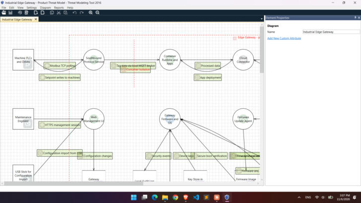
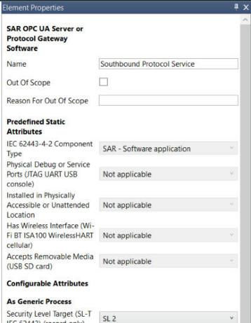
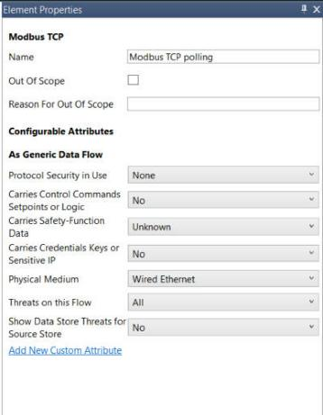

Using Microsoft TMT#
How to draw a model, answer its properties, generate the threats and review them in the Microsoft Threat Modeling Tool.
The screens#
| Screen | How to get there | What you do there |
|---|---|---|
| Home | Start TMT | Choose the template, create or open a model, open a template for editing |
| Design View | Default view of a model | Draw the diagram |
| Stencils pane | Right side of Design View | Pick elements: OT stencils grouped by type, plus Microsoft's |
| Element Properties pane | Select an element or flow | Name it and answer its properties |
| Analysis View | View > Analysis View | See the generated threats in the Threat List and review each one |
| Messages | Bottom tab | Warnings about the model, such as flows that are not connected |
| Reports | Reports menu | Full HTML report of the model and its threats |

Draw the diagram#
- Place elementsDrag a stencil from the Stencils pane onto the canvas. Use the most specific stencil, for example EDR PLC or Process Controller rather than Generic Process. The stencil decides which technology threats apply and fixes the properties it already knows.
- Connect them with flowsDrag a protocol stencil (for example Modbus TCP) onto the canvas, then drag each end of the arrow onto an element until it snaps. A flow goes one way. Draw two flows when both directions matter, for example commands down and status up.
- Draw trust boundariesBorder boundaries (IEC 62443 Security Zone, Safety Zone SIS, Industrial DMZ, Component or Device Boundary, Enterprise or IT Zone, Vendor or Cloud Boundary) are boxes: drag them on and resize them around the elements in the zone. Line boundaries (IEC 62443 Conduit, Internet or Untrusted Network Boundary, Physical Access Boundary, Process or Privilege Boundary) are lines that you draw across the flows they cut.
- Name everythingNames appear in the threat titles ("Spoofing of commands from Engineering Workstation to Line 3 PLC"), so make them meaningful.
- Answer the propertiesSelect each element and flow and answer its questions in Element Properties. See Properties.
- SaveSave the model as a
.tm7file. The template is stored inside the model, so the file opens on another machine without the template.
Stay inside the drawing area
Keep the drawing within about 1800 × 1100 pixels. TMT reports elements placed much further out as corrupted when it opens the file.
Answer the properties#


- Every question starts at Unknown, which keeps its threats in the model. That is safe but noisy, so answer No where something does not exist.
- Greyed-out values under Predefined Static Attributes are fixed by the stencil. For example, software has no debug ports, and HTTPS always has integrity and encryption.
- Questions marked (record only) document the model but do not change the threats.
Generate and review threats#
- Switch to Analysis ViewView > Analysis View. TMT generates threats for every data flow and shows the count in the status bar, for example "138 Threats Displayed".
- Read a threatSelect it in the Threat List. Its description, mitigations and references appear in Threat Properties.
- Set its stateNot Started: not reviewed yet. Needs Investigation: an open question. Not Applicable: the threat cannot happen here; write why in Justification. Mitigated: controls are in place; name them in the mitigation fields.
- Score itFill in the risk fields. See Reviewing threats and scoring risk.
Sort and filter the Threat List with its column headers, for example by Priority or by Interaction (the flow). When you change the diagram, TMT keeps your review of threats that still apply and adds new ones.
Other useful functions#
| Function | Where | Use it to |
|---|---|---|
| Apply Template | File > Apply Template | Move an existing model to a newer template version, or to the other template |
| Threat Model Information | File > Threat Model Information | Record the scope, owner, assumptions and external dependencies |
| Out Of Scope | Checkbox on any element | Exclude an element with TMT's own switch. The OT templates also offer Assessment Scope, where Supplier evidence keeps the threats but lets you cite the supplier's certificate |
| Open Template | Home screen | Look inside a template: stencils, threat rules, properties |
| Create Full Report | Reports | HTML report with the diagram, the threats per flow and your review |
Close a model before opening another
TMT 2016 can crash when you open a second model while another model's threat list is still shown. Use File > Close Model first.